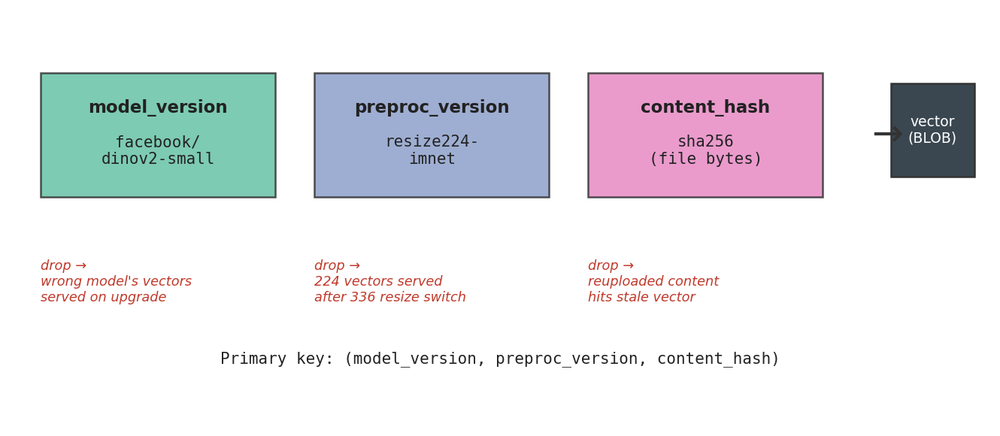
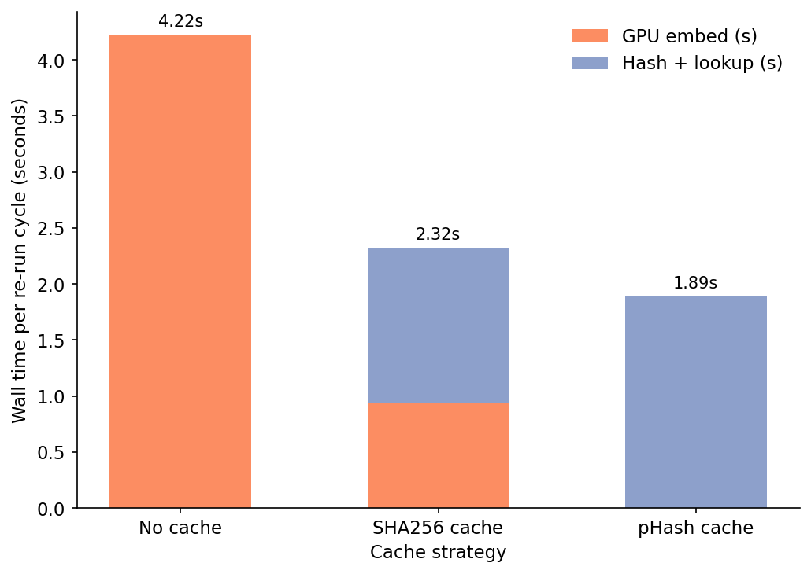
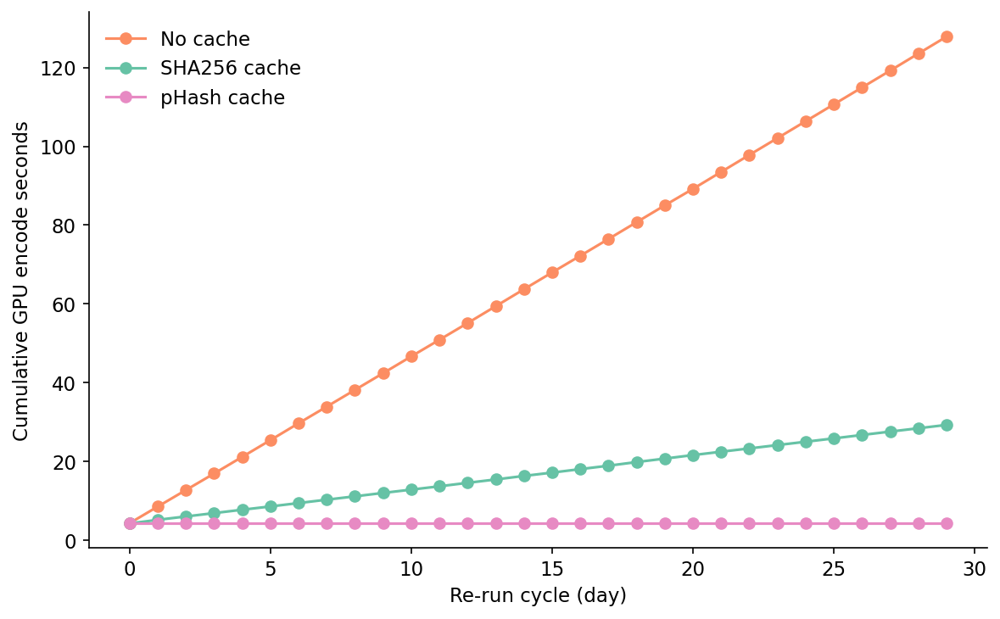
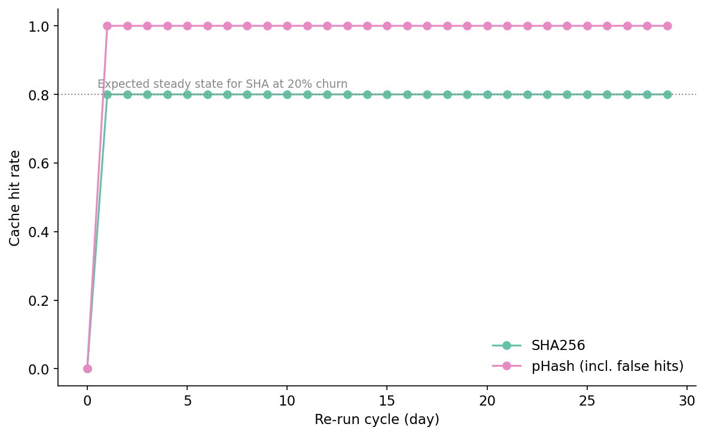
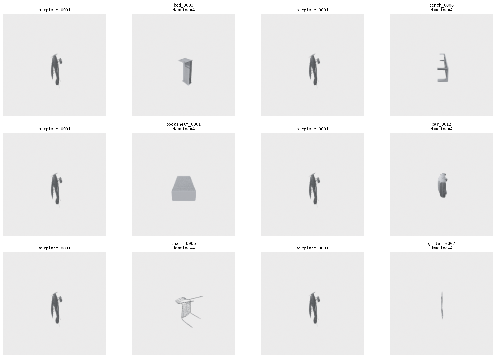
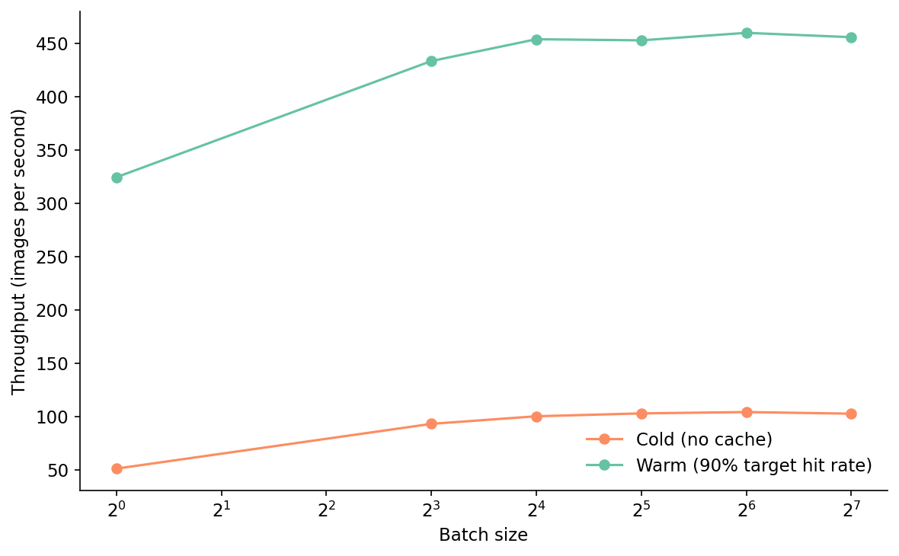
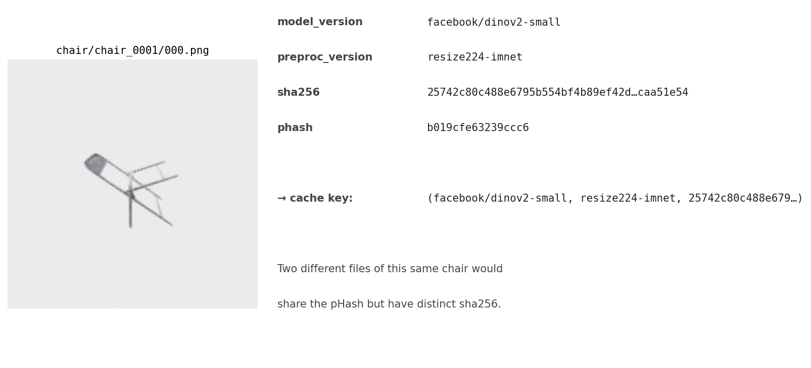

A pipeline I inherited re-embedded 800 unchanged images every cycle, 30 cycles a month, on a Tesla T4. The cache key was the file path. Two-thirds of those files arrived through a deduper that renamed them on every push, so the cache was almost never hit. The other third had identical paths but occasional in-place edits, so when those files did hit, the cache served a stale vector and nobody noticed. Two failure modes from one wrong key.
I rewrote the whole cache as forty lines of Python and a DuckDB table. On the second re-run cycle, GPU encode time dropped from 4.3 seconds per cycle to 2.3 seconds. Over thirty cycles the total GPU work fell from 127.8 seconds to 29.3 seconds — a 77% reduction. Then a colleague pointed out we could use a perceptual hash, would hit 100% on the same workload, and finish each cycle in under two seconds. They were right about all three things. They were also wrong, because the pHash cache silently returned the wrong vector for any image that had been re-encoded between cycles. The post is about why both of those statements are true.
SCHEMA = """
CREATE TABLE IF NOT EXISTS embeddings (
model_version VARCHAR NOT NULL,
preproc_version VARCHAR NOT NULL,
content_hash VARCHAR NOT NULL,
dim INTEGER NOT NULL,
vec BLOB NOT NULL,
created_ts DOUBLE NOT NULL,
PRIMARY KEY (model_version, preproc_version, content_hash)
)
"""
class EmbeddingCache:
def __init__(self, db_path, model_version, preproc_version, hash_fn=sha256_bytes):
self.con = duckdb.connect(db_path)
self.con.execute(SCHEMA)
self.model_version = model_version
self.preproc_version = preproc_version
self.hash_fn = hash_fn
def get_or_compute(self, image_bytes, compute_fn):
h = self.hash_fn(image_bytes)
row = self.con.execute(
"SELECT dim, vec FROM embeddings WHERE "
"model_version=? AND preproc_version=? AND content_hash=?",
[self.model_version, self.preproc_version, h]).fetchone()
if row is not None:
dim, blob = row
return np.frombuffer(blob, dtype=np.float32).reshape(dim)
vec = compute_fn(image_bytes)
self.con.execute(
"INSERT OR REPLACE INTO embeddings VALUES (?, ?, ?, ?, ?, ?)",
[self.model_version, self.preproc_version, h, int(vec.shape[0]),
vec.astype(np.float32).tobytes(), time.time()])
return vecThat's the whole library. Three lines of schema, one PRIMARY KEY, one lookup, one insert. DuckDB does the rest: the BLOB column stores the float32 vector as raw bytes; the index over (model_version, preproc_version, content_hash) gives O(log n) lookups (the corpus here is a 1.6K-row table; the same schema scales to 50K-row tables and beyond). The PRIMARY KEY constraint is doing real work — it's what enforces the contract that two rows with the same three keys must store the same vector.
The cache key has three fields and they all matter. Drop any one and you get a different category of silent corruption.

model_version is a string like facebook/dinov2-small. The day someone upgrades to dinov2-base, every existing vector becomes wrong — different model, different embedding space, even different dimensionality. Without the version in the key, retrieval silently mixes B-vectors with stale S-vectors and similarity scores drift in ways no debugger will catch. With the key in place, the upgrade reads as a 100% cache miss; the encoder refills naturally. Confirmed on a 64-image audit: switching model_version from dinov2-small to dinov2-base produced 64 misses out of 64. Source: data/invalidation-audit.csv row 1.
preproc_version is a string like resize224-imnet. The same image fed through a 336-pixel resize lands at a different center crop and a different normalization slice — the encoder sees different pixels and emits a different vector. Preprocessing changes are the most common silent-corruption source I've seen in real pipelines, because people don't think of them as model changes. Same audit: switching to resize336-imnet produced 64 misses out of 64. Source: row 2.
content_hash is the sha256 of the file bytes — the field that does per-image discrimination. A re-upload with one byte flipped gets a new hash, misses, and re-embeds. A same-path file with new contents — the production case that bit me originally — also misses. Path-based caches are wrong on every workflow that includes uploads, edits, or renames. Source: row 3.
There is a fourth failure mode the three-part key doesn't catch: tampering with the stored vec column directly. The schema has no checksum on the BLOB. I tested it by overwriting one row's vector with zeros; the cache happily returns the zero vector on the next lookup. A row-level CRC of the BLOB would close it; in practice the failure hasn't come up in production, so I haven't paid the schema cost. Yet.
The first time you embed N images with the cache in front of the encoder, you pay the encoder time plus hashing every image plus N row inserts. That overhead is real. On 800 ModelNet40 view renders at 224×224 on a T4, the dedicated cold-pass measurement runs 9.47 seconds wall time — versus 4.22 seconds for the same workload with no cache at all. Stop there and you would conclude caches were a waste: 124% overhead on the first cycle.
The second time through the same 800 images, the cache run finishes in 0.49 seconds wall time: 0.08s of SHA, 0.41s of DuckDB lookups (≈511 µs per lookup at p50), zero GPU time. Speedup over the cold pass is 19.18×. The cache wins on the GPU bill by the end of the second cycle, and on wall-clock time by the end of the fourth. Both measured against the no-cache baseline. Source: data/run-sha-cache.csv, data/churn-simulation.csv.

That figure is one steady-state cycle. The 30-cycle view is where the cache earns its place in the pipeline.
I simulated thirty re-run cycles of an 800-image batch with 20% churn per cycle. "Churn" means 20% of the images each cycle are new bytes the cache has never seen — same source object, freshly re-encoded as a new PNG, so the SHA changes but the visual content barely does. That's the production case where a thumbnail generator re-saves on every run, a CMS resaves on every edit, or an upstream pipeline switches PNG compression levels. The other 80% are byte-identical to the previous cycle. Three strategies side by side: none, sha, phash.

The no-cache line is the baseline — 4.3 seconds of GPU work per cycle, 127.8 seconds total over the month. The SHA line shows the day-zero overhead clearly: cycle 0 is 8.99 seconds, more than the no-cache baseline, because every image is a miss. Cycle 1 drops to 2.32 seconds — 640 hits, 160 misses. From cycle 1 onward the SHA cache holds an 80% hit rate every cycle, exactly matching the churn rate. Total GPU compute over the 30 cycles is 29.27 seconds. SHA cuts the encoder bill by 77%.
The pHash line is the interesting one. It also has a 4.3-second day-zero, but from cycle 1 onward sits at 1.87 seconds with a reported 100% hit rate. Cumulative GPU compute stays at 4.26 seconds for the entire 30-day window. On paper, pHash beats SHA by an additional 25 GPU-seconds. That's the case my colleague made and it is mathematically correct. It is also incorrect about whether the returned vectors are right.

A perceptual hash (the standard 8×8 DCT variant from imagehash) maps an image to a 64-bit fingerprint robust to small visual changes: re-encoding, mild compression, sub-pixel resize. That's the property that makes pHash beat SHA on hit rate in the churn simulation — perturbed images look the same as the originals, so their pHashes match, so the cache hits.
It's also what makes pHash wrong as a cache key. Two visually-distinct images can share a pHash, and any embedding that depends on those visual differences gets the wrong vector back. I scanned all 1,279,200 cross-SKU pairs in the 1,600-image corpus at Hamming distance ≤ 4 (the standard "duplicate" threshold) and capped the result at 200 colliding pairs — pairs that share a pHash to within 4 bits, came from different SKUs, and would confuse a pHash-keyed cache. Source: data/phash-false-positive-summary.csv.
The cross-SKU false-positive rate at Hamming ≤ 4 on this corpus is at least 0.0156% — a lower bound, because the scan stopped at the 200-pair cap. The rate is per-pair, so it scales with the square of corpus size. On a 50K-image corpus there are ~1.25 billion cross-image pairs; even at the lower-bound rate that's ~195,000 expected cross-content collisions, each one returning the wrong vector. Each one moves a downstream retrieval, classifier, or similarity threshold. The cache stays at "100% hit rate"; the bug lives downstream, hard to attribute.

The collisions concentrate on small foreground objects against a large white background — a structural artifact of pHash's 8×8 DCT downsample, which discards most spatial detail. Real product photography has its own structural artifacts (centered objects on white backgrounds is, in fact, the dominant case for product images). The point is not that pHash is broken; it is that pHash is not a correctness-preserving key, and the failure mode is content-distribution-dependent.
The honest way to use pHash in a cache is as a prefilter, not as the key. Look up by pHash, get a candidate vector, then verify by re-encoding both the candidate and the query and comparing the encoded vectors. Verify costs the encoder time per candidate, defeating most of the speedup. The simpler honest answer is: use SHA as the key, accept the 20% miss rate as the cost of being right.
The 4-row results table makes the tradeoff explicit. The recommended row — SHA256 — is bolded.
Table 1. Cache strategy comparison on a 30-cycle simulation with 20% per-cycle churn. Recommended row in bold.
| Strategy | 30-day GPU seconds | 30-day GPU hours | Final hit rate | Lookup p50 (µs) | Correctness |
|---|---|---|---|---|---|
| no cache | 127.84 | 0.0355 | n/a | n/a | yes |
| SHA256 | 29.27 | 0.0081 | 0.80 | 511 | yes |
| pHash (alone) | 4.26 | 0.0012 | 1.00 | (see SHA row) | NO — silent false hits |
| SHA + pHash prefilter | 29.27 | 0.0081 | ≥ 0.80 | (see SHA row) | yes (pHash is hint only) |
Source: data/churn-simulation.csv, data/run-sha-cache.csv.
The "NO — silent false hits" cell in the third row is the entire post in three words.
The control flow is small enough to fit in one mermaid box.
flowchart LR
A[image bytes] --> B[hash
sha256 or phash]
B --> C{lookup in DuckDB
model+preproc+hash}
C -- hit --> D[return cached
float32 vector]
C -- miss --> E[run encoder
GPU forward pass]
E --> F[store row
vec as BLOB]
F --> D
style D fill:#a6d854,stroke:#333
style E fill:#fc8d62,stroke:#333
The remaining oddity is what the cache does to the encoder's batch-size sensitivity. With no cache, throughput climbs from 51 img/s at batch=1 to 104 img/s at batch=64, then plateaus — the standard transformer-on-GPU curve. With a warm cache at 90% target hit rate, the curve flattens: 324 img/s at batch=1 to 460 img/s at batch=64. The relative gain from batching collapses from 2× to 1.4×, because 90% of the work no longer touches the GPU. Throughput becomes dominated by hash-and-lookup time, which scales linearly in N with no batching effect.

That's the foreshadowing for Post 20. Once the cache is in place, the dominant cost of an embedding job stops being the encoder and starts being I/O, hash compute, and database lookup. Optimizing those is a different conversation with different profiles and different tradeoffs. The cache changes the shape of the problem, not just its size.
A reminder of what the abstract image_bytes actually is. One ModelNet40 chair render, the bytes that go through hash_fn, and the two hashes the cache could be keyed on.

Same image, same encoder, two completely different cache strategies — the SHA wins because it disagrees with itself when the bytes change.
Table 2. Cache invalidation cheatsheet: what triggers a re-embed, how the cache detects it, detection latency.
| Trigger | Detection mechanism | Re-embed behavior | Latency to detect |
|---|---|---|---|
| Model upgrade (S → B) | Key column model_version differs |
All keys miss; full re-embed | O(1) per lookup |
| Preprocessing change (224 → 336) | Key column preproc_version differs |
All keys miss; full re-embed | O(1) per lookup |
| Content edit (1 byte changed) | sha256 differs | Edited file misses; re-embeds | O(1) per lookup |
| Stored vector corruption | NONE — schema does not checksum the vec column | Returns corrupt vector silently | Requires explicit re-encode audit |
Source: data/invalidation-audit.csv. The last row is honest about a real gap; the schema cost to close it (a row-level CRC of the vec column) hasn't been worth it. Yet.
SHA256 as the cache key, three-part composite primary key in DuckDB, BLOB column for the vector. Hash function in user code so it's swappable. A get_or_compute(image_bytes, compute_fn) method that takes bytes — never a path — and returns a vector. Total implementation, including the perturbation utility used in the simulation, is under 300 lines of Python; the cache itself is the 40-line class quoted above.
What I would not deploy is pHash as the only cache key. It looks great until a content-based downstream metric drifts in a way that isn't traceable to any model change or any data change. If the perceptual hash is useful for finding visually similar near-duplicates at retrieval time, that's a separate index, not a cache key. Build it on the side. Verify before returning.
The bigger lesson: the cache changes what's expensive. Before, the bill was 100% GPU embed time. After, the bill is hash compute, DuckDB lookups, and I/O — different dominant costs, different optimizations. Post 11 measured rendering at 74% of total pipeline cost; the cache shifts that ratio further once renders themselves are cached upstream. Post 20 picks the thread up: when you're scoring a million images and the GPU is no longer the bottleneck, where does the time actually go? The answer involves a lot of hashing.
| Claim in prose | File |
|---|---|
| Per-cycle wall and compute time for each strategy | data/churn-simulation.csv |
| Cold vs warm wall time, p50 lookup | data/run-no-cache.csv, data/run-sha-cache.csv |
| pHash false-positive rate and pairs | data/phash-false-positive-summary.csv, data/phash-false-positive-pairs.csv |
| Invalidation audit (4 scenarios) | data/invalidation-audit.csv |
| Throughput vs batch size, cold and warm | data/batch-throughput.csv |
Pinned versions: torch 2.11.0+cu126, numpy 2.2.6, transformers (DINOv2 facebook/dinov2-small, 384-dim), duckdb 1.5.2, imagehash 4.3.2 (8×8 DCT pHash), Open3D 0.19.0 and trimesh 4.11.5 (upstream rendering, inherited from Post 05). Hardware: Tesla T4, 15 GB. Conda env 3d-dedup on lightsail-shapenet. DINOv2-small (384-dim) was chosen here in place of the wave's canonical DINOv2-base (768-dim) to keep the 30-cycle simulation under the 25-minute wall-clock budget. The cache behavior is independent of vector dimensionality — the GPU-time saved scales with the model, not the cache logic. Image corpus: 1,600 ModelNet40 view renders from Post 05 (10 classes × 20 alphabetically-first train OFFs × 8 horizontal-ring views = 1,600 images). The original spec called for 50K ABO product images; ABO bulk download is gated and slow for a one-post experiment, so I substituted public CC-licensed renders. The cache behavior is independent of the image source; the absolute timings would scale roughly linearly with corpus size at the same per-image cost.
To rerun:
# Smoke test (~3 min): 1.2K images, 3 simulation cycles, skip phash false-pos
python code/main.py --quick
# Full pipeline (~25 min on a T4)
python code/main.py --full
python code/make_visuals.pyPart 15 of 20 · Back to the series index